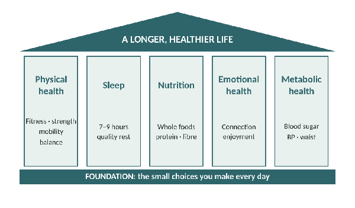
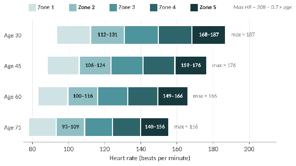
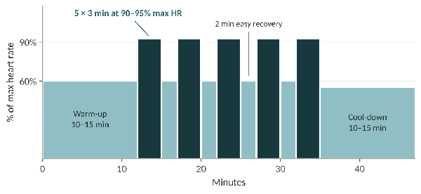
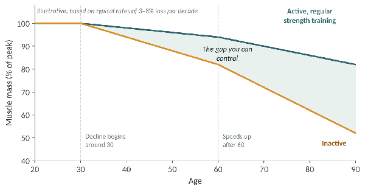
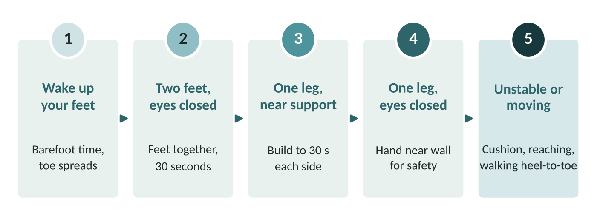
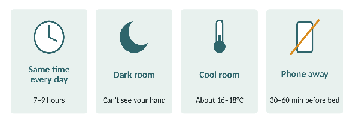
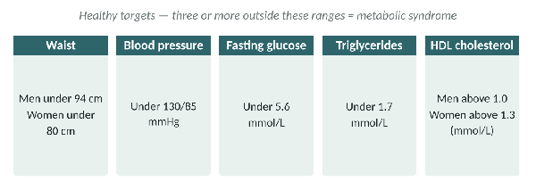

Longevity: A Guide to a Longer, Healthier Life
© 2026 John Evans. All rights reserved. No part of this booklet may be reproduced without the author’s permission, except for brief quotations in reviews.
Published by Health Autonomy. First edition, Oct 2026.
Important: This booklet provides general information about health and exercise. It is not a substitute for personal medical advice, diagnosis or treatment. Always consult your GP or a qualified health professional before starting a new exercise programme, particularly if you have a medical condition, are pregnant, or have been inactive. The author accepts no liability for any injury or loss arising from the use of this information.
References to research are provided at the back of the booklet so you can explore the evidence for yourself.
Introduction: Every Choice Counts
Many things influence how long we live and how well we live. Some are outside our control, such as our genes or the circumstances we were born into. But a great many are not. Each choice we make in a day nudges our health in a positive or negative direction, and it is the accumulation of these small, everyday decisions that ultimately shapes our wellbeing.
That can sound overwhelming. Do I really have to weigh up every single decision in case it quietly harms my health? Not at all. The real takeaway is far more hopeful: every positive decision you make from this point forward can improve your health and your life.
There is no point worrying about what happened yesterday; there is nothing you can do to change it. Today, though, is a different matter. Think of all the tiny changes you could make to your health today, and how they open up a whole world of possibilities for tomorrow.
This booklet is built around a simple idea that runs through the longevity research: we want to extend not just our lifespan (how many years we live) but our healthspan (how many of those years we spend strong, mobile, independent and enjoying life). The chapters that follow cover the main pillars of that:
Physical health: cardiovascular fitness, strength, mobility, functional movement, balance and injury prevention.
Sleep: the most underrated recovery tool we have.
Nutrition: what goes in, and why it matters so much.
Emotional health: connection, enjoyment and purpose.
Metabolic health: how all of the above comes together.
What follows is, I hope, information that puts you on the path to a better, healthier and happier you.
Before you dive in, turn to Your Longevity Check near the end of the booklet and record your starting point. It only takes 20 minutes, and retesting in 6 and 12 weeks is one of the most motivating things you can do.

A note before you start. This booklet is general education, not personal medical advice. If you have a heart condition, high blood pressure, diabetes, a joint problem, are pregnant, or have been inactive for a long time, speak to your GP or a qualified health professional before starting a new exercise programme, especially the higher-intensity training described later. Stop exercising and seek medical help if you experience chest pain, severe breathlessness, dizziness or palpitations.
Physical Health
Physical health is made up of several elements: cardiovascular fitness, strength, mobility, stability and balance, and injury prevention. Each one deserves attention in its own right, and together they determine how well your body carries you through life.
It is not enough simply to exercise. It helps enormously to understand what each type of exercise does and why it matters for your long-term health. When you understand the purpose, you are far more likely to stick with it.
Take Zone 2 training (which we will cover in detail shortly) as an example. Regular, steady, moderate-intensity aerobic exercise increases the number and efficiency of mitochondria, the tiny energy-producing structures inside your muscle cells.1,2 Better-functioning mitochondria help your muscles take up glucose from the blood and burn fat for fuel. Over time, this helps protect you against insulin resistance, obesity, and metabolic conditions such as type 2 diabetes.3
For those already living with metabolic conditions, regular exercise is one of the most effective tools for managing them. In large trials of people at high risk of type 2 diabetes, lifestyle programmes combining around 150 minutes of activity a week with dietary change cut the number of people who went on to develop the disease by more than half.4,5
Fitness itself is one of the strongest predictors of how long we live. In a study of over 120,000 adults who had treadmill tests, those with the lowest cardiorespiratory fitness had a far higher risk of death than those with the highest, a gap larger than that seen for smoking, diabetes or heart disease.6,7
Goal-Oriented Exercise
What is goal-oriented exercise? I like to think it can, and should, mean anything that matters to you.
It could be signing up for an event such as Race for Life or a parkrun. It could be climbing Everest. Or it could mean making sure that when you are 65, or 105, you still have enough in the tank to play with your grandchildren or great-grandchildren, or simply take the dog for a walk.
For me, the key point about goal-oriented training is that it is personal and specific to you. It is hard to stay motivated to exercise in a way that does not enhance your life, so it is no wonder people lose interest. The research backs this up: setting clear goals is one of the more reliable ways of helping people become, and stay, more active.8
Personally, I have always struggled to exercise without a target. That target has always been a race or a contest, and it has always been about getting stronger or faster in some way. That is great for a specific sport, but it is not necessary for a long and healthy life. So I had to reframe what I was training for and how I wanted my future to look. It was no longer a 100-mile cycle or a 5k run; it was how I wanted to perform for the rest of my life.
Cardiovascular Fitness
Lots of people exercise, yet many are not sure why they do it or what they are working towards. That uncertainty drains motivation and is one of the main reasons people stop.
I find it essential to understand not only how but why I do each activity. From Zone 2 to VO2 max training, I need to understand both the theory and the practice so that it makes sense to me. What is the benefit? My aim in this chapter is to help you feel confident and empowered to do the same.
What is cardiovascular exercise?
In a nutshell, cardiovascular (or “cardio”) exercise is any physical activity that raises your heart rate and, over time, improves the efficiency of your heart, lungs and blood vessels. Running, cycling, swimming, brisk walking and dancing are all examples.
The UK Chief Medical Officers recommend that adults do at least 150 minutes of moderate-intensity activity a week (for example, 30 minutes on five days), or 75 minutes of vigorous activity, or a mix of the two. They also recommend strengthening activities on at least two days a week and breaking up long periods of sitting.9,10 Think of these as the minimum: the benefits keep rising as you do more.
Aerobic versus anaerobic exercise
Aerobic exercise is activity you can sustain for a long time, such as walking, jogging, cycling or swimming at a steady pace. Your muscles use oxygen to burn fat and carbohydrate and produce adenosine triphosphate (ATP), the body’s energy currency. Aerobic exercise builds cardiovascular health and endurance.
Anaerobic exercise involves short bursts of intense effort, such as sprinting or lifting heavy weights. The effort is so high that your body cannot supply oxygen fast enough, so it relies on fuel stored in the muscle that can be used without oxygen (hence an-aerobic, meaning “without oxygen”). Anaerobic exercise helps build strength, power and muscle mass.
Both are important for health and longevity. Simply put:
A walk, a slow jog, or anything you can keep going for a long time = aerobic.
Sprinting or lifting heavy weights = anaerobic.
The next obvious questions are: What counts as moderate intensity? How much do I need to do, and how often? What should it look like? And how do I measure it? Let’s take each in turn.
Heart Rate Training Zones
Exercise intensity is commonly described using five heart rate zones, each a percentage of your maximum heart rate. For this booklet we are really only interested in two types of training: Zone 2 (steady, moderate effort) and VO2 max training (hard intervals in the upper zones, typically Zone 5).
| Zone | % of max heart rate | How it feels |
|---|---|---|
| 1 | 50–60% | Very easy; gentle walking |
| 2 | 60–70% | Comfortable; you can hold a conversation |
| 3 | 70–80% | Moderate to hard; talking in short sentences |
| 4 | 80–90% | Hard; only a few words at a time |
| 5 | 90–100% | Maximal; can’t talk, can only sustain for minutes |
Different coaches and devices draw these boundaries slightly differently, so treat the numbers as a guide rather than a rule.
What is your maximum heart rate?
The simplest starting point is to subtract your age from 220.11 At age 30 that gives 220 − 30 = 190 beats per minute (bpm).
A more accurate formula for most adults, especially as we get older, is: 208 − (0.7 × your age).12 At age 30: 208 − 21 = 187 bpm. At age 60: 208 − 42 = 166 bpm.
Both formulas are estimates, and individuals can differ by 10 bpm or more either way. If you have had a lab test, or your watch has measured a genuine maximum during an all-out effort, use that number instead.
Zone 2 Training
Zone 2 sits at roughly 60–70% of your maximum heart rate. For a 30-year-old with an estimated maximum of 190 bpm (220 − age), that is about 114–133 bpm; using the more accurate formula (maximum 187 bpm) it is about 112–131 bpm. The chart below shows the zones at different ages.

At this intensity you are building your aerobic base. Crucially, the work is powered mainly by your mitochondria, burning a high proportion of fat alongside glucose. Training here regularly improves your body’s ability to switch between fuels (often called metabolic flexibility), and that is what starts to protect you from metabolic disease.2
How much, how often, how hard?
Start with two 30-minute sessions a week and build gradually.
Aim for around three hours a week over time; for example, four 45-minute sessions. This comfortably exceeds the 150-minute national guideline.
Expect to notice a difference within about six to eight weeks: easier breathing, a lower heart rate at the same pace, and better recovery.
How do I know I am in Zone 2?
The easiest way is a heart rate monitor or a smartwatch with heart rate tracking (chest straps are more accurate than wrist sensors). If you do not have one, use the talk test: you should be able to hold a conversation in full sentences, but you should know you are working. If you can sing, speed up; if you can only manage a few words, slow down.13 The most precise method is a blood lactate test, where Zone 2 corresponds roughly to the highest intensity at which lactate stays low and steady (around 2 mmol/L).
Don’t fall into the trap of thinking harder is always better. For longevity, it is not! A lack of this steady, easy work doesn’t just leave you less fit; it can reduce your body’s ability to use fat as a fuel efficiently, which has real consequences for your long-term metabolic health.
VO2 Max
VO2 max is the maximum amount of oxygen your body can take in and use during exercise, usually expressed in millilitres of oxygen per kilogram of body weight per minute (ml/kg/min). The higher your VO2 max, the greater your capacity for physical work.
It might seem unimportant at first glance, but VO2 max is one of the strongest predictors of long-term health. Each step up in cardiorespiratory fitness is associated with a meaningfully lower risk of death from all causes and from cardiovascular disease.6,7 VO2 max naturally declines with age, so the higher you build it now, the more reserve you have later for everyday tasks like climbing stairs, carrying shopping or enjoying a long walk.
Estimating your VO2 max
Just as there is a formula for maximum heart rate, there is a simple way to estimate VO2 max using your resting heart rate, known as the Heart Rate Ratio method:14
Work out your maximum heart rate (see above).
Measure your resting heart rate. Sit or lie quietly for at least five minutes (first thing in the morning is ideal), count your pulse for 30 seconds and multiply by 2.
Divide your maximum heart rate by your resting heart rate, then multiply the result by 15.3.
Example: a 50-year-old with an estimated maximum of 170 bpm and a resting heart rate of 60 bpm: 170 ÷ 60 × 15.3 ≈ 43 ml/kg/min.
Whenever I have used this method, it has come out very close to the figure reported by my Garmin, so as a rough benchmark it is fine. Bear in mind it is an estimate (it was developed in trained men and can be several points out for any individual), so use it mainly to track your own progress over time. A laboratory test is the gold standard.
VO2 max training
Training to improve VO2 max is not pleasant! I recommend building a solid base of Zone 2 first. My personal guideline is at least six months of consistent Zone 2 work (around four 45-minute sessions a week) before adding regular VO2 max sessions. Once you have that base, one VO2 max session a week alongside your Zone 2 work is plenty for most people.
VO2 max training places a high demand on your heart. If you have, or suspect you have, a heart condition, or any of the conditions listed at the start of this booklet, get medical clearance before attempting it.
A typical VO2 max session looks like this:
Warm-up: 10–15 minutes of easy jogging, cycling or dynamic stretching, gradually building in pace.
Main set, option 1 (intervals): 5 × 3-minute efforts at 90–95% of your maximum heart rate, with 2 minutes of easy jogging or walking between each. Aim for a strong, consistent pace across all five.
Main set, option 2 (the “4 × 4”): 4 × 4-minute efforts at 90–95% of maximum heart rate with 3 minutes of active recovery. This well-studied protocol has been shown to improve VO2 max more effectively than steady moderate training.15
Main set, option 3 (hill repeats): find a steep hill, or set a treadmill to an incline, and do 6 × 1-minute hard efforts uphill, walking or jogging slowly back down to recover. Focus on driving your arms and keeping good form.
Cool-down: 10–15 minutes of easy jogging or walking to bring your heart rate down gradually.

Strength and Power
Not everybody wants big muscles, and that’s fine. You don’t need big muscles to be strong, but you do need to be strong to age well.
The evidence here is compelling. A large review of studies found that people who did muscle-strengthening activities had a 10–17% lower risk of dying from any cause, and lower risks of heart disease, cancer and type 2 diabetes, independent of their aerobic exercise.16 Even simple measures of strength, such as grip strength, predict future health: lower grip strength is linked to higher risks of heart attack, stroke and early death.17
Sarcopenia
Sarcopenia is the progressive, age-related loss of muscle mass and strength. It is a major driver of what we call frailty, and it is linked to falls, fractures, loss of independence and poorer health overall.18
The surprising part is how early it begins. Muscle mass starts to decline from around the age of 30, at a rate of roughly 3–8% per decade, and this loss accelerates after 60.19

There are many reasons for this: lack of specific exercise, general inactivity, poor diet (especially too little protein), and illness. To live and age well, you need to keep that loss to a minimum. Nutrition plays a big part, and we will come back to it later. For now, let’s focus on the physical side: how you can maintain, and even increase, your strength and lean muscle as you age.
The good news is that muscle responds to training at any age. Studies of people in their 80s and 90s show significant gains in strength with appropriate resistance training.20 It is never too late to start.
Calisthenics
Calisthenics is a form of strength training that uses your own body weight as resistance. It improves the strength of your muscles, tendons, ligaments and bones, and it needs no specialist equipment, so you can train anytime, anywhere.
Strength is not just about lifting heavy weights. It comes from consistent, well-performed exercise built into your daily routine. Calisthenics lets you challenge your limits and build the kind of strength you actually use in everyday life: getting up from a chair, climbing stairs, lifting and carrying.
Good starting exercises include:
Squats (or sit-to-stands from a chair): legs and hips.
Push-ups (start against a wall or kitchen worktop if needed): chest, shoulders and arms.
Glute bridges: hips, glutes and lower back.
Leg raises and planks: core strength.
Lunges or step-ups: single-leg strength and balance.
These are easy to learn and almost endlessly scalable, so you can progress at a rate that suits you. Aim to work all the major muscle groups on at least two days a week, in line with UK guidelines.9
Film yourself
One of the most valuable things you can do, especially without a coach, is to film some of your sets. I do this regularly. What you think you are doing and what you are actually doing are not always the same thing. Reviewing the footage helps you spot where your form is slipping and correct it early. Good habits here make a world of difference and can save you from problems later.
Mobility and Functional Movement
“Mobility is a bit like oxygen: it’s just not that important until you don’t have enough!”
We don’t miss the things we take for granted until we lose them. Think about your joints and how you use them. As children, most of us moved without fear or hesitation. Watch a young child squat, crawl and jump: it is so free and uninhibited. But the less we play and the less we move, the less mobility we have. Unfortunately, getting it back is not quite as simple as just stretching more.
The problem is that we forget how to perform simple movements well, and we start to compensate, falling into movement patterns that are not natural for our bodies.
Not sure what I mean? Try this
Do an unloaded squat (no weights) as deep as you comfortably can. Film it from the front, the side and behind.
Now lie on your back and perform the same movement, bringing your knees towards your chest as if squatting. Film it from the side and from above.
For most people, the movement lying down is more symmetrical, has a greater range of motion, and flows more easily. So the joints can move that far. The restriction you see when standing is usually down to a lack of strength and control through that range, along with movement patterns that have been reinforced by years of habit.
This is a key concept: in the absence of injury or disease, reduced mobility is often linked to not having enough strength throughout a joint’s full range of motion. It is rarely just about tight muscles, despite the common myth. In fact, research shows that strength training through a full range of motion improves flexibility about as well as stretching does.21
It is important to work on the mobility of all your joints, because each plays a role in how you move. By training movements that strengthen each joint through its full available range, you improve mobility, balance and coordination, which means moving freely, carrying out daily activities with ease, and reducing your risk of injury as you age.
Functional Movement
At first glance, functional movement and mobility seem like the same thing, and to a large extent they are intrinsically linked. You can’t have great functional movement without good mobility, but you can have good mobility and still have poor movement patterns.
Functional movements are the natural patterns of human movement: squatting, hinging, pushing, pulling, rotating, walking, getting up and down from the floor. Approaches such as Dynamic Neuromuscular Stabilisation (DNS), developed in Prague, build on the movement patterns we all go through as babies (rolling, crawling, kneeling and standing) to retrain stability and control.22 Practising and mastering these patterns can improve strength, flexibility, coordination and posture, and help prevent injury.
To make this practical, think about how you walk:
Is your upper body relaxed and rotating gently in the opposite direction to your legs and pelvis, or is it rigid?
Are your shoulders rolled forward, hunched up, or relaxed?
Does your head push forward? Do you look down at the ground, or do you stand tall looking towards the horizon?
The movement patterns we learn as babies and children are often forgotten and replaced with positions of convenience, shaped by how we interact with the world and by our physical and emotional state. These unconscious adaptations can lead to compensations in our biomechanics, and eventually to aches, pains and injuries.
We were never designed to sit all day. Long periods of sitting are linked to poorer health, but the good news is that roughly 60–75 minutes of moderate activity a day appears to offset much of the increased risk.23 Unless we actively counter long hours of sitting, we should expect our function to suffer.
Balance and Stability
Much of what we have already covered will improve your balance and stability. But balance is a little more complicated than that. Balance problems can come from the brain and nervous system, the inner ear, weakness in the musculoskeletal system, or simply a lack of practice.
I often hear people say, “I’m getting older; it’s normal for my balance to be a bit off.” If that’s the case, why doesn’t everyone’s balance fail as they age? Why do some people keep great balance throughout their lives?
Yes, we all have different abilities, and what you have done throughout your life will certainly affect your balance as you age. But poor balance seems to be treated as an inevitable part of ageing, and few people believe they can do anything about it. This is simply not true.
Neuroplasticity, the ability of the brain and nervous system to adapt, learn and create new pathways, continues throughout life, so improvement is always possible. A major Cochrane review found that exercise programmes, particularly those including balance and functional training, reduce the rate of falls in older people by around a quarter.24
Balance also matters as a marker of overall health. In one study of over 1,700 adults aged 51–75, those unable to stand on one leg for 10 seconds had an 84% higher risk of dying over the following decade, even after accounting for age and other health conditions.25 That doesn’t mean standing on one leg will make you live longer, but it shows how closely balance is tied to general health and resilience.
Common Causes of “Poor Balance”
Strength. Some people confuse weakness with balance problems. If you don’t have the leg strength to climb stairs easily, you may struggle towards the top and feel as though you are losing your balance. That is a strength issue affecting your ability to balance, and strength can be improved.
Joint mobility. If you don’t have enough range of motion in your hips or knees, or your lower back doesn’t rotate well, you may stumble or trip more often and assume it’s a balance problem. Again, it’s really reduced mobility, and mobility can be improved.
Functional movement. If your everyday movement patterns are affected (by weakness, stiffness, old injuries or incomplete rehabilitation), the way you move day-to-day will suffer, and this can look like a balance problem. Are your steps short when you walk? Is your spine stiff, so you can’t adjust when your weight shifts from one leg to the other? All of these can be improved.
Proprioception. This is your awareness of where your body is in space and in relation to its own parts. It is controlled by the brain and nervous system, but much of the information comes from sensors in your joints, ligaments and the soles of your feet. Retraining proprioception takes time, but it is effective and can start with some very simple exercises, beginning with your feet.
Respect Your Feet
If you spent all day, every day, wearing thick gloves that restricted your hand movements and dulled the sensation in your fingers, would you expect to keep your dexterity?
Yet we squeeze our feet into stiff, ill-fitting shoes every day, don’t give them a second thought, and still expect them to do the job they were designed for. Weakness in the toes and feet is linked to a higher risk of falls in older people.26
I’m not suggesting you stop wearing shoes. I’m saying you need to do more with your feet: a few simple exercises every day to offset the restriction they live with. For example:
Spend some time barefoot at home.
Spread and lift your toes, one at a time if you can.
Pick up a sock or small towel with your toes.
Do slow calf raises, lowering under control.
Once your feet are working well, progress to simple balance work: standing on one leg at a time (near support), then with your eyes closed, then on a cushion, before moving on to more dynamic balance exercises. If you take nothing else from this chapter, please respect your feet. They must last you a lifetime, and they are your connection to the world around you.

Investing in balance and stability now pays off in the long run. A strong, stable foundation lets you move more efficiently and with less effort, can help reduce chronic pain and improve posture, and, above all, keeps you active and independent as you grow older.
Preventing Injuries
Nobody wants to be injured, and protecting yourself from injury is an important part of staying active for life. The foundations of injury prevention are everything we have covered so far: strength, stability, balance, mobility and good functional movement, alongside cardiovascular fitness. Add sensible progression (increasing training load gradually), proper warm-ups, and enough rest and sleep, and you will significantly reduce your risk.
Sleep
Sleep is often overlooked in discussions about health, and that is a critical mistake given its profound impact on our wellbeing.
Even a single night of poor sleep has measurable effects. Restricting sleep raises blood glucose and evening cortisol (a stress hormone) and makes the body less able to handle sugar.27 It also impairs thinking and reaction time: after around 17–19 hours without sleep, people perform as badly on some tests as someone over the drink-drive limit in many countries.28
The long-term consequences are even more concerning. During deep sleep, the brain’s waste-clearance system becomes much more active, clearing out by-products such as amyloid-beta, a protein linked to Alzheimer’s disease.29 Sleep is also when the brain consolidates memories and skills learned during the day.30 In a study following nearly 8,000 UK adults for 25 years, those who consistently slept six hours or less in their 50s, 60s and 70s had around a 30% higher risk of developing dementia than those who slept seven hours.31
Poor sleep affects virtually every system in the body. Most adults need 7–9 hours a night (7–8 hours for those over 65).32 Making sleep a priority starting today is one of the best things you can do for your long-term health.
Practical Tips for Better Sleep
It’s easy to talk about “sleep hygiene” but harder to know how to put it into practice. Here are a few tips that you might find helpful.

Keep a consistent schedule
Go to bed and get up at roughly the same time every day, including weekends. Your body clock thrives on routine. Getting outside into daylight soon after waking also helps set your body clock for the day.
Phones down
Most people have heard “don’t use your phone at bedtime because of the blue light,” and almost everyone now has a blue-light filter. Bright screens in the evening can delay the release of melatonin, the hormone that helps you fall asleep.33 But newer research suggests that blue-light filters on their own make little difference to sleep.34 The bigger problem seems to be what we are doing on our phones. Apps are designed to be stimulating and to keep us scrolling, which keeps the brain alert, pushes bedtime later, and makes it harder to fall asleep. Try putting your phone away (ideally out of the bedroom) at least 30–60 minutes before bed.
Dark room
Light stimulates your brain. Keep lights dim in the evening, and make your bedroom as dark as possible: ideally, once you’re in bed, you can barely see your hand in front of your face. Blackout curtains or an eye mask can help.
Cool room
Your core body temperature needs to drop for you to fall asleep and move through the sleep stages properly.35 A room that is too warm slows this process. Around 16–18°C suits most people, with breathable bedding.
Wind down
Avoid highly stimulating activities, such as intense gaming, work emails or heated discussions, in the last hour or two before bed. Moderate exercise in the evening is generally fine, and may even help, but vigorous exercise finishing within about an hour of bedtime can make it harder to fall asleep.36 Caffeine can stay in your system for many hours, so keep it to the morning, and remember that while alcohol may make you drowsy, it reduces sleep quality.
Nutrition
As a society we are facing a nutritional paradox: many of us are overfed yet undernourished, eating more calories than we need while missing out on the nutrients our bodies require.
The numbers are stark. In England, 64% of adults are overweight or obese, and 29% are living with obesity.37 Around 4.6 million people in the UK have been diagnosed with diabetes (about 90% of them with type 2), and an estimated 1.3 million more are thought to have type 2 diabetes without knowing it.38 The number of diagnoses keeps rising year on year.
These are not just statistics. They represent real people, affected by conditions that are, to a large extent, preventable. Type 2 diabetes is strongly linked to lifestyle factors such as excess weight, diet and inactivity, and as we saw earlier, lifestyle programmes can halve the risk in people at high risk.4,5 That should feel like a wake-up call for all of us: it is time to prioritise our health and take control of our future.
Simple Advice to Get You Started
Nutrition is a big topic that deserves far more space than this booklet allows, but here are some simple principles to get you started:
Be aware of what you put into your body. Base your meals on whole, minimally processed foods: vegetables, fruit, pulses, wholegrains, nuts, fish, eggs and quality meat or plant proteins.
Read the labels. Watch for added sugars, salt and long lists of unfamiliar ingredients. The UK traffic-light labels are a quick guide.
Know your energy balance. Have a rough idea of how much you eat (calories in) compared with how active you are (calories out). You don’t need to count forever, but tracking for a week or two can be very revealing.
Eat enough protein. Protein is vital for maintaining muscle and for healing. Many experts recommend that older adults aim for 1.0–1.2 g of protein per kg of body weight per day (more if you are very active or recovering from illness), which is higher than the standard UK recommendation, spread across your meals.39 For a 75 kg person, that’s roughly 75–90 g a day.
Eat more fibre. UK guidance is 30 g a day, yet most adults eat far less. Higher-fibre diets are linked to lower risks of heart disease, stroke, type 2 diabetes and bowel cancer.40,41
Limit alcohol. The UK Chief Medical Officers advise no more than 14 units a week, spread over several days.
Emotional Health
As social beings, our brains need stimulation through communication, interaction and collaboration. Whether it’s through volunteering in your community or simply spending time with friends, social engagement is vital for mental health.
The research on this is striking. A review of 148 studies covering over 300,000 people found that those with stronger social relationships had about a 50% greater likelihood of survival over the study periods than those with weaker connections, an effect comparable to stopping smoking.42 Social isolation is also recognised as one of the modifiable risk factors for dementia.43
It is so important that you allow yourself to prioritise fun. Stop feeling bad about enjoying yourself and thinking you should be being productive! An average human life lasts somewhere around 4,000 weeks.44 Have fun, and enhance your wellbeing and quality of life.
“Engaging in enjoyable activities can significantly impact your emotional wellbeing.”
Is that an obvious statement? Yes, but it’s also massively undervalued. When was the last time you truly prioritised your happiness and your emotional wellbeing?
A few ideas to improve your emotional health
Play cards or a board game instead of watching TV.
Put the phone down and have a proper conversation.
Go for a walk, swim or run with a friend, and focus on the experience, not the exercise.
Eat together as a family, with no phones at the table.
Volunteer in your local community.
Learn something new: a language, an instrument, a dance class.
Building strong relationships and a support network helps reduce stress, improves mental health and increases overall happiness. Make time for meaningful connections; it is an investment in both your emotional health and your longevity. And if you are struggling with low mood or anxiety, please talk to your GP or someone you trust. Asking for help is a strength.
Metabolic Health
Metabolic health describes how well your body processes and regulates energy and nutrients. It is usually assessed using five markers:45
Blood sugar (glucose) levels
Triglycerides (a type of blood fat)
HDL (“good”) cholesterol
Blood pressure
Waist circumference
Having three or more of these outside the healthy range is known as metabolic syndrome, which significantly increases the risk of type 2 diabetes, heart disease and stroke. Worryingly, one US study found that only around 1 in 8 adults had all five markers in the optimal range.46

Understanding how your body works in both healthy and unhealthy metabolic states, and how poor metabolic health affects longevity, helps you choose effective strategies to improve it. Your GP or practice nurse can check most of these markers, and in England, the free NHS Health Check (offered every five years to adults aged 40–74) covers several of them.
This is a complex topic that I couldn’t do justice to in this short (but longer than expected!) booklet. What I can tell you is that everything in this booklet will help improve your metabolic health: Zone 2 and strength training, good sleep, sensible nutrition, and strong social connections. And that is good for both your lifespan and your healthspan.
Your Longevity Check
What gets measured gets improved. These simple tests give you a snapshot of where you are now across the pillars in this booklet. None needs special equipment: just a chair, a wall, a tape measure, and a watch or phone timer.
Do the tests now and note your results. Then retest in 6 and 12 weeks. Don’t worry about where you start; what matters is the direction you’re heading.
Stay safe. Do the balance test next to a wall or sturdy chair. Stop any test if you feel pain, dizziness or unwell. These are self-check tools, not a medical diagnosis. If your results worry you, speak to your GP.
How to Do the Tests
One-leg balance. Barefoot, next to a wall. Lift one foot and rest it against the back of your standing leg, arms by your sides, eyes ahead. Time how long you can hold it, up to 30 seconds. Record your weaker side.25
30-second sit-to-stand. Sit in the middle of a dining chair (about 43 cm/17 inches high), arms crossed over your chest. Count how many times you can stand fully up and sit back down in 30 seconds.47
Resting heart rate. First thing in the morning, before getting up or having caffeine, count your pulse for 30 seconds and multiply by 2 (or use your watch).48
Estimated VO2 max. Use the Heart Rate Ratio method from the VO2 Max chapter: maximum heart rate ÷ resting heart rate × 15.3. Because healthy values vary a lot with age and sex, compare this one with yourself over time.
Waist-to-height ratio. Measure your waist halfway between your lowest rib and the top of your hip bone, after breathing out normally. Divide by your height (in the same units). A ratio under 0.5 means your waist is less than half your height.49
Sleep. Your average hours of sleep per night over the last week.
Activity. Minutes of moderate activity (Zone 2 or brisk walking) in the last week, and the number of strength sessions.9
Protein. How many of your main meals yesterday included a palm-sized portion of protein?
Connection. How many times in the last week did you have a proper conversation or spend time with friends or family (not just messages)?
Your Scorecard
Green: keep it up. Amber: room to improve. Red: a good place to focus first. Turn to the matching chapter for what to do next.
| Test | Green | Amber | Red |
|---|---|---|---|
| One-leg balance | 30 s+ | 10–29 s | Under 10 s |
| Sit-to-stand (30 s) | 15+ | 12–14 | Under 12 |
| Resting heart rate | Under 65 | 65–80 | Over 80 |
| Estimated VO2 max | Track your trend | ||
| Waist-to-height | Under 0.5 | 0.5–0.59 | 0.6+ |
| Sleep (hours) | 7–9 | 6–7 | Under 6 |
| Moderate activity (min/week) | 150+ | 75–149 | Under 75 |
| Strength sessions (per week) | 2+ | 1 | 0 |
| Meals with protein (of 3) | 3 | 2 | 0–1 |
| Social catch-ups (per week) | 3+ | 1–2 | 0 |
The sit-to-stand ranges are for adults over 60; younger adults should expect to score well above 15. These ranges are a simple guide for tracking your own progress, not clinical cut-offs.
Making It Happen
How do you find time to create balance in your life?
This is the question of questions, but it’s also essential for living a healthier and longer life. How do we prioritise self-care, exercise and healthy eating?
There is no magic answer, but I have found that by understanding why these things matter, I’m able to make a conscious decision to take part, or not to take part. For me, that is the key!
I have the choice. I can choose to say I’m too tired and I can’t be bothered. I can choose to get up and exercise, or I can choose to stay in bed for an extra hour.
We all need to recognise that we can choose, and that everything we choose shapes us for tomorrow. We can choose to improve our wellbeing, increase our longevity, make time for activities that bring us joy and relaxation, set boundaries and prevent burnout. By taking care of ourselves, we make sure we have the energy and vitality to enjoy a fulfilling and vibrant life.
Or we can choose not to. It’s up to you.
An example week
Here is how the ideas in this booklet can fit into an ordinary week. Adjust it to suit your life, fitness and goals.
| Day | Main session | Extras |
|---|---|---|
| Monday | Zone 2: 45 min brisk walk, cycle or jog | Foot exercises (5 min) |
| Tuesday | Strength: 30 min bodyweight circuit | Balance practice (5 min) |
| Wednesday | Zone 2: 45 min | Mobility routine (10 min) |
| Thursday | Mobility and functional movement (20 min) | Board game or catch-up with a friend |
| Friday | Strength: 30 min bodyweight circuit | Balance practice (5 min) |
| Saturday | Zone 2: 45–60 min (or one VO2 max session once your base is built) | Cook a proper meal |
| Sunday | Rest, or a relaxed walk with family or friends | Plan the week ahead |
Choices
This booklet is a guide to help you understand the choices available to you. How you use it, and what steps you take next, are up to you.
I really hope you start to make the healthy choices, and I would love to hear any feedback or thoughts this booklet has sparked.
I wish every one of you a happy, long and healthy life.
I wish you all complete health autonomy.
John Evans
About the Author
John Evans is a registered osteopath (General Osteopathic Council registration number 6171) who helps people move better, recover from injury and stay active for longer.
Working with patients every day, John saw the same pattern again and again: people being told that stiffness, weakness and poor balance were “just getting older”, and accepting it. His practice grew from a simple belief that most of this can be improved, and that people deserve to understand their own bodies well enough to take charge of their health.
A lifelong cyclist and runner who has always needed a goal to train for, John has reframed his own training around one question: how do I want to be able to live for the rest of my life? This booklet is his answer, written to help you find yours.
Through Health Autonomy, John combines osteopathy with practical longevity coaching: cardiovascular fitness, strength, mobility, balance, sleep and nutrition, all aimed at one goal: giving you the knowledge and confidence to look after your own health for life.
Work With Me
If this book has got you thinking, and you'd like some help putting it into practice, here is how we can work together at Chudleigh Health Hub. Every option starts with a full assessment: six clinical tests plus your calculated VO2 max, with same-day results.
The Longevity Baseline
The 60-Day Programme
The Complete Overhaul
References
Holloszy JO. Biochemical adaptations in muscle: effects of exercise on mitochondrial oxygen uptake and respiratory enzyme activity in skeletal muscle. J Biol Chem. 1967;242(9):2278–2282.
San-Millán I, Brooks GA. Assessment of metabolic flexibility by means of measuring blood lactate, fat, and carbohydrate oxidation responses to exercise in professional endurance athletes and less-fit individuals. Sports Med. 2018;48(2):467–479.
Colberg SR, Sigal RJ, Yardley JE, et al. Physical activity/exercise and diabetes: a position statement of the American Diabetes Association. Diabetes Care. 2016;39(11):2065–2079.
Knowler WC, Barrett-Connor E, Fowler SE, et al. Reduction in the incidence of type 2 diabetes with lifestyle intervention or metformin. N Engl J Med. 2002;346(6):393–403.
Tuomilehto J, Lindström J, Eriksson JG, et al. Prevention of type 2 diabetes mellitus by changes in lifestyle among subjects with impaired glucose tolerance. N Engl J Med. 2001;344(18):1343–1350.
Mandsager K, Harb S, Cremer P, et al. Association of cardiorespiratory fitness with long-term mortality among adults undergoing exercise treadmill testing. JAMA Netw Open. 2018;1(6):e183605.
Kodama S, Saito K, Tanaka S, et al. Cardiorespiratory fitness as a quantitative predictor of all-cause mortality and cardiovascular events in healthy men and women: a meta-analysis. JAMA. 2009;301(19):2024–2035.
McEwan D, Harden SM, Zumbo BD, et al. The effectiveness of multi-component goal setting interventions for changing physical activity behaviour: a systematic review and meta-analysis. Health Psychol Rev. 2016;10(1):67–88.
Department of Health and Social Care. UK Chief Medical Officers’ Physical Activity Guidelines. London: DHSC; 2019.
NHS. Physical activity guidelines for adults aged 19 to 64. nhs.uk. Accessed October 2026.
Fox SM, Naughton JP, Haskell WL. Physical activity and the prevention of coronary heart disease. Ann Clin Res. 1971;3(6):404–432.
Tanaka H, Monahan KD, Seals DR. Age-predicted maximal heart rate revisited. J Am Coll Cardiol. 2001;37(1):153–156.
Reed JL, Pipe AL. The talk test: a useful tool for prescribing and monitoring exercise intensity. Curr Opin Cardiol. 2014;29(5):475–480.
Uth N, Sørensen H, Overgaard K, Pedersen PK. Estimation of VO2max from the ratio between HRmax and HRrest – the Heart Rate Ratio Method. Eur J Appl Physiol. 2004;91(1):111–115.
Helgerud J, Høydal K, Wang E, et al. Aerobic high-intensity intervals improve VO2max more than moderate training. Med Sci Sports Exerc. 2007;39(4):665–671.
Momma H, Kawakami R, Honda T, Sawada SS. Muscle-strengthening activities are associated with lower risk and mortality in major non-communicable diseases: a systematic review and meta-analysis of cohort studies. Br J Sports Med. 2022;56(13):755–763.
Leong DP, Teo KK, Rangarajan S, et al. Prognostic value of grip strength: findings from the Prospective Urban Rural Epidemiology (PURE) study. Lancet. 2015;386(9990):266–273.
Cruz-Jentoft AJ, Bahat G, Bauer J, et al. Sarcopenia: revised European consensus on definition and diagnosis. Age Ageing. 2019;48(1):16–31.
Volpi E, Nazemi R, Fujita S. Muscle tissue changes with aging. Curr Opin Clin Nutr Metab Care. 2004;7(4):405–410.
Fiatarone MA, Marks EC, Ryan ND, et al. High-intensity strength training in nonagenarians: effects on skeletal muscle. JAMA. 1990;263(22):3029–3034.
Afonso J, Ramirez-Campillo R, Moscão J, et al. Strength training versus stretching for improving range of motion: a systematic review and meta-analysis. Healthcare (Basel). 2021;9(4):427.
Frank C, Kobesova A, Kolar P. Dynamic neuromuscular stabilization & sports rehabilitation. Int J Sports Phys Ther. 2013;8(1):62–73.
Ekelund U, Steene-Johannessen J, Brown WJ, et al. Does physical activity attenuate, or even eliminate, the detrimental association of sitting time with mortality? A harmonised meta-analysis of data from more than 1 million men and women. Lancet. 2016;388(10051):1302–1310.
Sherrington C, Fairhall NJ, Wallbank GK, et al. Exercise for preventing falls in older people living in the community. Cochrane Database Syst Rev. 2019;1(1):CD012424.
Araujo CG, de Souza e Silva CG, Laukkanen JA, et al. Successful 10-second one-legged stance performance predicts survival in middle-aged and older individuals. Br J Sports Med. 2022;56(17):975–980.
Mickle KJ, Munro BJ, Lord SR, Menz HB, Steele JR. Toe weakness and deformity increase the risk of falls in older people. Clin Biomech. 2009;24(10):787–791.
Spiegel K, Leproult R, Van Cauter E. Impact of sleep debt on metabolic and endocrine function. Lancet. 1999;354(9188):1435–1439.
Williamson AM, Feyer AM. Moderate sleep deprivation produces impairments in cognitive and motor performance equivalent to legally prescribed levels of alcohol intoxication. Occup Environ Med. 2000;57(10):649–655.
Xie L, Kang H, Xu Q, et al. Sleep drives metabolite clearance from the adult brain. Science. 2013;342(6156):373–377.
Walker MP, Stickgold R. Sleep-dependent learning and memory consolidation. Neuron. 2004;44(1):121–133.
Sabia S, Fayosse A, Dumurgier J, et al. Association of sleep duration in middle and old age with incidence of dementia. Nat Commun. 2021;12(1):2289.
Hirshkowitz M, Whiton K, Albert SM, et al. National Sleep Foundation’s sleep time duration recommendations: methodology and results summary. Sleep Health. 2015;1(1):40–43.
Chang AM, Aeschbach D, Duffy JF, Czeisler CA. Evening use of light-emitting eReaders negatively affects sleep, circadian timing, and next-morning alertness. Proc Natl Acad Sci USA. 2015;112(4):1232–1237.
Duraccio KM, Zaugg KK, Blackburn RC, Jensen CD. Does iPhone night shift mitigate negative effects of smartphone use on sleep outcomes in emerging adults? Sleep Health. 2021;7(4):478–484.
Harding EC, Franks NP, Wisden W. The temperature dependence of sleep. Front Neurosci. 2019;13:336.
Stutz J, Eiholzer R, Spengler CM. Effects of evening exercise on sleep in healthy participants: a systematic review and meta-analysis. Sports Med. 2019;49(2):269–287.
NHS England. Health Survey for England 2022, Part 2: Adult overweight and obesity. 2024.
Diabetes UK. Number of people living with diabetes in the UK reaches all-time high [news release]. February 2025. diabetes.org.uk.
Bauer J, Biolo G, Cederholm T, et al. Evidence-based recommendations for optimal dietary protein intake in older people: a position paper from the PROT-AGE Study Group. J Am Med Dir Assoc. 2013;14(8):542–559.
Scientific Advisory Committee on Nutrition. Carbohydrates and Health. London: The Stationery Office; 2015.
Reynolds A, Mann J, Cummings J, et al. Carbohydrate quality and human health: a series of systematic reviews and meta-analyses. Lancet. 2019;393(10170):434–445.
Holt-Lunstad J, Smith TB, Layton JB. Social relationships and mortality risk: a meta-analytic review. PLoS Med. 2010;7(7):e1000316.
Livingston G, Huntley J, Liu KY, et al. Dementia prevention, intervention, and care: 2024 report of the Lancet standing Commission. Lancet. 2024;404(10452):572–628.
Burkeman O. Four Thousand Weeks: Time Management for Mortals. London: Bodley Head; 2021.
Alberti KG, Eckel RH, Grundy SM, et al. Harmonizing the metabolic syndrome: a joint interim statement. Circulation. 2009;120(16):1640–1645.
Araújo J, Cai J, Stevens J. Prevalence of optimal metabolic health in American adults: National Health and Nutrition Examination Survey 2009–2016. Metab Syndr Relat Disord. 2019;17(1):46–52.
Jones CJ, Rikli RE, Beam WC. A 30-s chair-stand test as a measure of lower body strength in community-residing older adults. Res Q Exerc Sport. 1999;70(2):113–119.
Zhang D, Shen X, Qi X. Resting heart rate and all-cause and cardiovascular mortality in the general population: a meta-analysis. CMAJ. 2016;188(3):E53–E63.
National Institute for Health and Care Excellence. Overweight and obesity management (NICE guideline NG246). London: NICE; 2025.